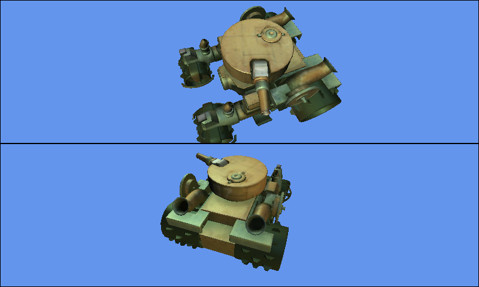

Split Screen
Ported from Microsoft's XNA 4.0 Split Screen sample.
Source for this sample on GitHub ↗

Play ▸Opens in a new tab. The tank and lower camera animate automatically.
About this sample
The original sample renders the same scene twice with separate viewports, view matrices and projection matrices. Its animated tank appears below a fixed camera in the upper half and an orbiting camera in the lower half. Black borders mark the two viewports.
Controls
| Action | Keyboard | Gamepad |
|---|---|---|
| Exit | Escape | Back |